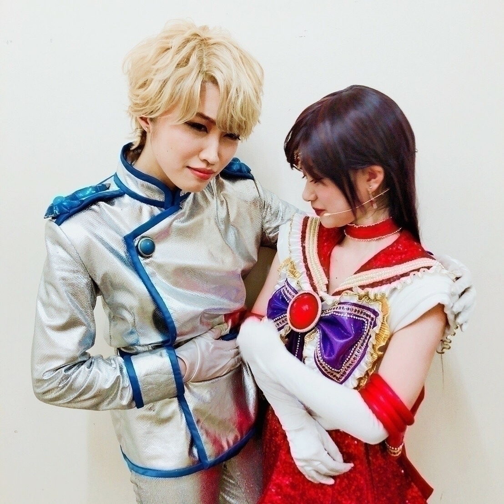
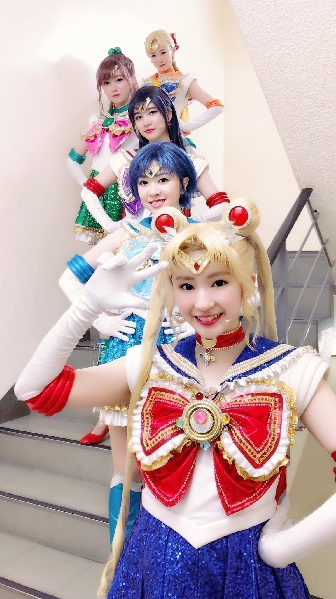

2018/0702Mon私 は teamSTAR！
凄い長いブログになりました
乃木坂46版 ミュージカル美少女戦士セーラームーンについてだけ書いたブログになっております(..)
これから観劇される方
された方
出来なかった方もお付き合いください(..)


久々に自分の携帯で自撮りしたら
画質が凄くあらかった(..)
私は舞台を観劇するのは
大好きなのですが
大好きなものだからこそ
遠くに感じていたくて
夢の世界だと思っていたくて
演技に対しても
自分が自分でない人間になる事
それを私は楽しめないだろうと
自分が舞台に立つことをずっと拒絶してきました。
今回演出のウォーリー木下さんは
初めてお会いしたときに
さらりと
演技は嘘ではありませんって
仰ってその瞬間から
心が楽になり、楽しみたいって思えるようになりました
そう思えてから稽古は大変ながら
とても充実感に満ち溢れてました
ウォーリーさんはとても自由に皆のお芝居、感情を評価してくれる方でした！！
ウォーリーさんの作り出した
セーラームーンミュージカルは新しく、新鮮でした！
何回演じてもドキドキしてときめいて泣けて笑える
まるで、本当にあの世界の住人なんだと思えるものでした！
他のキャストさんが
このblogをチェックしてるかは
わかりません
いや、チェックされてたら
少しお恥ずかしいような気もしますが、、、
6月を終えた感想を(..)
アンサンブルの皆さん
本当にお稽古場がら
顎外れそうなくらい
驚かされることが沢山ありました
難しいダンスやアクションをさらりとこなしていく皆さんを見て
私も頑張るぞって何回も思えました！
自分は舞台観るのは昔から大好きで
どの舞台を見ていても
世界観を作ってる大事なポイントって絶対絶対アンサンブルさんなんですよ！
自分が初めて舞台に立つ側になって
裏側を見て
改めてアンサンブルさんの
凄さを感じました(..)
山内優花さん なるちゃん
本読みのときに
ビックリしました！
もう、なるちゃんがそこに居る
そう思えるくらい初めての時点で
圧倒されたのを覚えています！
海野役の田上さん
なるぐり
お二人の存在は私の中で大きかったです
私も１日でも早く
レイちゃんらしさを声色に
立ち振舞いに伝わるように出さなきゃって思えました。
優花さんは私達メンバーに積極的に
声をかけてくださって
沢山アドバイスを下さいました！
お稽古期間からずっと
優花さんのブログ読んでる方はわかると思いますが
常に周りをみていて
的確に私達をみてくれて
そして、言葉で伝えるのが上手な方です
そんな言葉に力のある
説得力のある
優花さんに誉め言葉を頂いたときは格別に嬉しいものです
本当に本当に本当に本当に本当に
優花さんのブログみて欲しい
私の取り扱い方わかってる(^^;
田上真里奈さん 海野くん
とても可愛らしい方です
伝えられなかったけど
素の真里奈さんのお顔凄くタイプです、、、(..)
優花さんのところにも書かせていただいてますが
本読みの第一声で
心臓が飛び出そうなくらい海野くんでした！
普段の真里奈さんは大人っぽくて
素敵なお姉さんって雰囲気なんですが
海野くんになると
なんかギュッとしたくなるような
愛らしさ
そこがアニメで観てた
海野くんみたいでした！
なるぐりのシーン大好き
ほっこりする
乃木坂46版 ミュージカル美少女戦士セーラームーンに大切な存在、場面を作ってくださったと思ってます
この二人、世界を守るために
戦うんだって
舞台中意識できたのも
お二人の演技力があったからです。
ネタバレになるので詳しくかけませんが
9月もこのお二人の絡み早く見たい(..)
ルナ
ルナ役は日替わり
お二人ともまずは
その姿勢
ぜひ、9月観にこられてない方お越し下さい、、、(..)
握手会で多く言われたのですが
ルナ役の人達凄いよって
絶対大変だったと思う
宜しくお伝えくださいって
私の握手会に来てくれた方で何人かに言われました。
人形劇って凄いんだなって
昔から沢山の人に夢を見させてくれる人形劇
人形としてルナが舞台に出演するのは初めてだったらしいのですが
セーラームーンの世界は
ルナなしでは始まらないってくらい
ルナは大切なキャラクターです
小さな頃私もルナ、アルテミスのぬいぐるみを持っていましたが
本当に生きてるルナが居るみたいで
凄くテンションが上がりました(..)
若狭博子さん
teamSTARの初日を一緒に迎え
Wキャストって練習時間が
半分の中、一緒に頑張って初日を迎えられたのが何よりも嬉しかったです！
松本美里さん
沢山話し合いをしてくださって
ありがとうございました！
お手紙も頂いたのですが
そのメッセージが嬉しかったです！
玉置成実さん ベリル様
初めてお会いしたとき
ベリル様役と言うこともありますし
綺麗な方ですし
遠くから拝む方だと思っていたのですが
関西弁でお稽古からずっと可愛らしい声でニコニコで
明るくて
ネガティブでもじもじさんの多い
teamSTARのことを
いつも包み込んでくれて
誉めてくださって
それが何よりも嬉しくて
成実さんに誉められたいからまた頑張りたいって
9月もベリル様、成実さんの為に
頑張りたいです(^-^)v
石井美絵子さん タキシード仮面、まもるさん
みかこさんはプルートの時を知っていてだから初めてお会いしたときは何だか不思議な気分でした。
でも、私にはまもるさん、タキシード仮面にしか見えてません！
凄くセーラームーンへの愛を人一倍感じました。
セーラームーンの世界に関わってる時間が長いからこその
愛なんだろうなって今なら凄く理解ができます。
常に全体を見てくださって
そして、優しくて格好いい！！！！
もう素の状態のみかこさんすら格好いい！！！
本当にここのキャストさんは
皆さん優しすぎて尊いです
本当に大好きなんです
みかこさんの
「セーラームーンの世界に生きてくれてありがとう」って言葉が大好き
安藤千尋さん クンツァイト
私、宝塚ファンでして、、、
いつも舞台に立ってる
千尋さんを観てたから
同じ舞台の上に立つなんてって
震えました。
私、お稽古期間中
台本入れに宝塚のグッズファイルを使っていて
シンさんとお二人で声をかけてくださったのですが
そのときは人見知りしてました。
千尋さんは初めてお会いしたときから皆の中心でした。
千尋さんが居たから
人見知りの多い乃木坂46メンバーも
キャストさんと仲良くなれ
良き空気感ができたと私は思っています(^-^)v
ある日突然私の頭を鷲掴みするようになった千尋さん
何故かはいまだに不明ですが
千尋さんのその謎のスキンシップが
私のルーティンの１つになり
今ではもうこのやり取りが落ち着く
ものになってしまい
ここ数日お会いしてないだけで
もう恋しいです
早く千尋さんに頭鷲掴みされたいです、、、(;_;)
shinさん ネフライト
シンさんも千尋さん同様
宝塚時代を知っていて
スタイルが２次元
宝塚って入待ち出待ちあるのですが
シンさんの私服が好みで
いつも遠くから拝んでました、、、
キャストさん内でも
シンさんファンは多くて
いや、私は宝塚時代からシンさんの
その美しさに気づいてたぞって
皆、気づくの遅いからって訳のわからない嫉妬して(^^;
千秋楽後の握手会でも女の子は勿論男性にもシンさん格好いいって声は多くて凄いなーって
そのくらいシンさんはステージでは
格好いいです
でも、普段のシンさんは凄く乙女
誰よりも女子力高い方だと思います
そのギャップに私はやられてました、、、
シンさんは
とにかく真っ直ぐで
心配になるくらい努力されてて
でも雰囲気は優しくふんわりしてるんです。
そして、人一倍仲間思いな方な気がしてます。
私はそんなシンさんの内面が好きです(..)
でも、公演を終えてから
少し連絡をとっていて
気づいたのですが、シンさん
私にはツンツンツンツンしてる(..)
次、会ったら絶対お仕置きしてやる
小嶋沙里さん ゾイサイト
仕草も大人っぽくて
所作も美しくて
指先から何まで全部が美
あの嘲笑う仕草にいつも萌えてました(^^;
沙里さんのお陰でゾイサイトのファンになった！
さりさんのゾイサイト凄く大好き！
さりさんも大好き！
歌もダンスも全部全部大好き大好き！
普段の沙里さんは美意識高くて
綺麗なお姉さん
とても落ち着いていて
なんでもスマートにこなす
憧れる存在でした
りなさんから沙里さんのお話を良く聞くことがありましたが
勝手ながら沙里さんとは気が合いそうって、、、
だから9月にはもっと沢山お話しするのが目標です(..)
一緒に過ごす時間が多かった
四天王の皆さんともっともっと
仲良くしたいのに
話しかけると
それぞれのペアの戦士達が嫉妬してくるの
私のよって
これ、teamSTARあるある(^^;
それだけ自分の大切な人って
偽りのない強く思う気持ちが
本物の四天王、四守護戦士のような関係性を舞台で出てたのかなって
武田莉奈さん ジェダイト
１番お世話になりました
いまだに毎日欠かさず連絡とってますが、、、(^^;
私の恋人が莉奈さんで良かったなって本当に思ってます
とても明るくて
元気で面白くて可愛くて
莉奈さんが喋ると
周りの人、全員が笑ってて笑顔になる
私が素で舞台を楽しめたのは
絶対、莉奈さんのお陰でした。
この乃木坂46版 ミュージカル美少女戦士セーラームーンをやると聞いたとき
自分がセーラーマーズ、火野レイちゃんだよって
高山さんから聞かされたときは
逃げ出したいほど怖かったです。
冒頭にも書きましたが
自分の大好きな舞台、ミュージカル
それもセーラームーンだなんて
大好きなものだからこそ
その世界に自分が入るのが関わるのが嫌で、プレッシャーすぎて
色んな不安を抱えての
顔合わせの日は
人生最大に緊張しました。
でも、莉奈さんの明るい雰囲気にのみ込まれて
いつしか不安や心配よりも
早くお稽古場に行きたいって思えていて
私、幼少期から無愛想だとかどこか冷めてるって
誤解されることの多いタイプで
こんな短期間で私のことなんて誰も理解してくれないだろうって
悩んでいたのですが
りなさんもそうですし、ここのキャストの皆さんは
凄く理解してくれて
だから、リラックスして安心して
心の底から楽しく出来ました。
大好きな人だからこそ
ツンツンしまくりでしたが
このお写真を見て頂ければお分かりの関係性


でも、私のなかでジェダレイは
こうだと思ってる
レイちゃんの方が強いと思う(^^;
ツンツンツンツンデレくらいだからね
いつかはジェダイトにキュンとさせられたいわ
この関係性
レイちゃんだったからなのか
私の素の性格だったからなのか
でも、この性格だったからこそ
レイちゃんに出会えて
そして、この作品に関わって
大好きな人、大切だと思える人が増えました
沢山の感情を教えてくれた
作品です。
人の全力って
言葉にしなくても
伝わるんだとも感じました。
私は口下手で不器用な人生を歩んでいますが
それでも、誰かの本気は伝わるし 人の心をなぜか動かす
頑張ってるとか
こんな言葉にしなくても
本物は伝わるんだと
改めて自分で自分に気付かされました。
teamSTAR でよかった
皆についても語りたいけど
今度また別に
まだ、9月もあるし何だかメンバーとしては毎日会うから照れますし(..)
最近は、戦士としての記憶がなくなった私達って感じで
井上さんとみりあは本当に元気とノリが良くて
うめピヨピーナッツ、梅澤は
照れながらもこの二人のテンションについていけてて
カナさんは本当にまとめ役
丁寧に突っ込みをいれてくれる
私はそんな皆を見ながらうるさいわよって言いながらも楽しんでて
乃木坂46の楽屋にteamSTARの皆で集まったりしてて
そんな、皆が尊いです(..)
本当に皆さんでよかった！
皆さんが好きすぎて困ってます
キャストの皆さんご存知の
私の嫉妬深さ
好きすぎるが故にツンツンって感じの態度をとる私
文章にするの難しいのですが
きっと、皆さんは理解してくれてるはず
皆さんが居たから
ここまで来れたと思ってます。
千秋楽のご挨拶でも言わせていただきましが
ムーンライト伝説の歌詞に
同じ国に生まれたのミラクルロマンスと言う歌詞がありますが
凄く深い歌詞だなって
本当に色んな運命の重なりで
出会えた大切な人達です。
乃木坂46版 ミュージカル美少女戦士セーラームーンに関わってくれた全ての皆さんが大好きで私の人生の宝物です。
はやく9月にならないかなー
本当にはやくはやく9月きてー
ドキドキ、わくわくしながら
9月も沢山の方に愛される作品、舞台になりますように
宜しくお願い致します(^-^)v

この写真私が小さい頃憧れてた
セーラームーンのCDジャケットを
意識して撮影をお願いしました
わかる方にはわかるかな
身長や画角が少し異なりますが
お気に入りの１枚です(..)
2018/07/02 11:00


コメント(849)
がんばろうな
まってました
セーラームーンお疲れ様
9月の公演も頑張って！
あつき
蘭世のおかげでにこやかな日々を送れています。
今日はセラミュがすごく良かったってことを伝えに来たよ。
実は開演直前、なぜか自分がドキドキしたりして、、笑
僕のはじめての推しメンがこうして世界的に愛される原作のミュージカルに出演することがすごく嬉しかった。
元々のストーリーが素晴らしいこともあって、泣くことは必至だったよ。
蘭世はもちろん、他のセーラー戦士や友達、ダークキングダムメンバーのみなさんも、ほんとに原作から出てきたような再現度で驚かされた。
個人的にうさぎちゃんの「もぉやぁだー！かえるー！」とか、
あみちゃんあのおっとりとした喋り方、うめちゃんの圧倒的まこちゃん感、みなこちゃんの影の立役者的シンクロ感。もっともっと細部にまで感じた「美少女戦士セーラームーン」は、なんの補正もなしに最高のミュージカルだったよ。
レイちゃんについては。あんなに覇気のある声を出せるのは、少なくとも乃木坂メンバーなら蘭世だけでしょう。
低めの声は舞台で栄える。本当にその声に自身を持って、大事に大事にしてほしい。
いつもの蘭世を知っているから、レイちゃんというキャラクターがシンクロして見えたよ。アニメ版とは喋り方が少し違うのも、チームとして一丸となるべくこのミュージカルではすごく良かったなぁ。
やっぱりどうしても長くなっちゃうな、、、
ここに書きすぎると、他の人の迷惑にもなるかもだし、こまめに投稿、手紙も出すね。
とにかく、蘭世の「マーズパワー」たくさんもらいました。
お仕置きもされた気持ちでいます。
今日もまた心の中で「マーズパワーメイクアップ」と唱え、頑張っていくよ。
ほんとに素敵な景色を見せてくれたありがとう。
それじゃ、また今週の握手会よろしくです！
美しくて死んじゃいそうよ…
最近暑くなってきてるね…。熱中症とかには気をつけて！セーラームーンの舞台最後まで駆け抜けてね！
またコメントするね！
セラミュが東京でしかやってなくて残念だけどこれからも蘭世を応援してるね
21枚目はアンダーだけど蘭世の良さをそのまま見せてくれたら嬉しいです。
したっけね
マーズ姿最高です！
９月からも頑張って！
ライブ楽しみにしてます！
ほんとに蘭世のteamSTARの好きさが伝わったよ！！
周りの人たちもみんなほんとにいい人そうたちでよかった！！
9月公演見に行くね！！
選抜には入れなかったけど蘭世を応援する気持ちは変わりません！！
これからも応援してる！！
セーラームーンお疲れ様でした！！9月もよろしく！！
蘭世のセラミュに対する想いがずっしりと伝わってきました。九月の公演も頑張ってね！
僕は蘭世の頑張りをすごく感じてるよ
負けず嫌いな蘭世さんのその性格が
僕は大好きです。
そして、セラミュの仲間たちへの言葉、
すごく気持ちが伝わってきました。
蘭世さんにとってすごく大切な時間になったんだなって
とてもかんどうしました。
21枚目アンダーでの大活躍楽しみでしかないです。
蘭世！またブログ更新まってるよ！
キャストの皆さんすごくいい方達だね！
とりまセーラームーン6月公演お疲れ様！
9月見に行きます。楽しみです！
蘭世のセーラーマーズ役はぴったしな役だったと思うし蘭世のそのセーラームーンに対する熱い想いは演技にでてたよ！
今回のシングルでは選抜にはなれなかったけど絶対力をつけてきてるし確実に人気も上がってきてるよ
ここで負けずにファンのみんなとセンター目標に突き進んでいこうね！
ずっと応援してます(^-^)v
何回も言ってるかもしんないけどteamSTAR本当に最高だったよ。
何度でも観たい。もし円盤化されたら摩り切れるほど観たい。
本当にキャストの皆と仲良さそうでチームワークの良さが伝わってたし、蘭世ちゃんの全力しっかり客席まで届いてたよ。
ずっと思い出に残る作品をありがとう。
大好き‼️
6月の公演は忙しくて北海道から遠征できなかったけど9月公演は行くから楽しみ
この前の個握でも見どころ教えて貰ったし今回のブログ見て早く9月きてほしいって思ってる笑
あと今回選抜落ちしたのは悲しいけど次は絶対選抜入り願ってる今後も頑張ってください応援してます
蘭世が舞台の稽古とか公演期間は忙しい中に、楽しんでるなという感じがモバメとかから伝わってきたよ(^^)
いいメンバーに出会えてよかったね！！
セーラームーンお疲れ様。
かっこいいね～。
九月公演も頑張ろう！
それまで乃木坂46のライブを頑張ろう！
らじらーもお疲れ様。
大暴れだったね。
ミュージカルのストレスが爆発した？
楽しかったよ！
即興支配も良かったし！
ピーナッツ軍団に入るか。
ピ～～ナッツ！
皆さん本当に凄みある舞台で圧倒されました、感動しました！
９月も素晴らしい舞台にしてくださいね。
らんぜ、諦めずに頑張ってね！！
そしてミュージカル6月公演、お疲れさまでした。
ミュージカル、2.5次元、どちらも初めてでしたがあっという間に魅力に取り憑かれてしまいました。
まさにセーラームーンの世界が、あそこにはあったと思います。
主演の乃木坂メンバーはもちろんですが、支えてくださったキャスト、特に四天王のみなさんは本当に格好良くて……。安藤さんには惚れちゃいました（笑）。
ジェダイトの武田さんとの掛け合いは見るからに「短時間で関係を築いたんだな」と感じるものでした。カーテンコールでのコメントに涙を見せていた武田さん、そこにツッコミを入れる蘭世さん、あんな姿を見せられたら……という感じです。
言葉にするのが難しい。セラミュが終わったあとも続く関係になったんじゃないかな？
公演が終わって随分経ちますが、いまだにセラミュロスなので9月が待ち遠しいです。さらにパワーアップした火野レイちゃん、セーラーマーズの姿を楽しみにしてます！
今回の舞台で蘭世にとってとてもいい経験になったってことがブログ読ませてもらってわかった
9月公演早く行きたいよ！
いい感じだね
素直ないい子だよ
よしよししてあげたいくらいです
頑張れ
やぁ(*´∇｀)ﾉ 親愛なる蘭世
ブログ更新ありがとう！
今は出先だから帰ったらゆっくり落ち着いて読んでコメントするわなd(>_･ )ｸﾞｯ!
じゃきっとまた後で(*´∇｀)ﾉ
応援してる
まだまだこっからよ
僕はセンターになるとずっと信じてる
とてもよかったよ
本当に楽しんで舞台をできているみたいで嬉しいです！！
9月の公演がすごく楽しみ！！
蘭世の価値観というか考え方というか、尊敬する。
おれはそんなところが好きで蘭世を推してる。
蘭世の言葉にはパワーあるしね！笑
ずっと応援する。
これからも一緒について行かせてください。
いつもありがとう。
またコメントするわ！
蘭世すきよ～
6/22の千秋楽に見に行ったよ！原作も読んでなかったしどんな物語なのかわかんなかったけどいざ、舞台が始まるとそんなこと気にならないくらい作品に入り込んでしまったよ（笑）
最後の挨拶の時にキャストの皆さんが話している時に乃木坂のみんなが相づち打ちながら話聞いている姿を見て、すごい充実したいい経験を、いい期間を過ごしたんだなって色々考えたよ
みんなの演技力がすごくて最初びっくりした！！
短期間であんなに上手くなったんだ、セーラームーンになってるって本気で思ったよ。
SNSで稽古の期間のキャストの皆さんとの絡みとか関係がどんどん深くなっているのは知っていたけど、最後乃木坂のみんなが話している時に周りのキャストさんも感動してていい関係になったんだなぁって思ったよ！！
乃木坂とセーラームーンの両立で大変だったと思うけど、作品中は楽しそうに歌って踊ってて嬉しかった！！
感動して涙が出てきたよ。ほんとに6月公演お疲れ様！！
９月も頑張ってね！！絶対見に行くぞぉ！！！
しっかりと読ませていただきました
teamSTARのみんなが犬メンみたいにいつまでも仲良く過ごしている未来が見えます！
きっと蘭世を見つけられたのも運命だと思うからこれからもどうぞよろしくお願いします!!
早く9月のセラミュ見に行きたいよ
蘭世がここまで真摯に向き合える事に出会えてよかったです
この舞台でこれからの乃木坂の活動も今までと違う見方や考え方が生まれるかも知れません
そんなターニングポイントになりうる舞台を見に行けなくてごめんなさい
選抜発表もあって色々思うところはありますが今の位置に意味があると信じてバスラ、21枚目の活動、そして9月の舞台頑張ってください！
蘭世の前に向く気持ちが強ければ何があってもファンは付いてくるので！
自分の目指す場所に向かって突き進め！
長文お疲れ様です！全部読ませていただきました！
アンサンブルの方、キャストの皆さんへのすきな気持ちがもう、凄いですね。みんなこの、ブログみたらニヤニヤが止まりませんよ笑
なにより、蘭世や、他のメンバーが堂々と舞台を演技できるように、1人1人の性格を考えて、いい雰囲気作りをしてくれているのが、とても感動的で本当にいい方々ですね！
9月からまた、はじまりますが、楽しみながら頑張ってね！
応援してる！
昨日のらじらーも面白かったよ！すきピーナツ！
次のブログ更新楽しみにしてます！
いつにもなく蘭世らしいブログだったね！
蘭世のいい意味でも悪い意味でも
その真っ直ぐな気持ち伝わってきました！
(あっ今回はもちろんいい意味です笑拗ねないでね！)
本当にこの作品、メンバー、関係者さん達のことが好きなんだなとすぐわかりました！
少し嫉妬してます笑
こんな経験が出来たのも蘭世が乃木坂に入って今までめげずに走り抜けてきたからだと勝手ながら思ってます。
多少なりとも「変化」は必要な事だと思う、だけど根っこの部分は決してズレちゃいけないとも思います
まぁ蘭世なら心配はないですけどね笑
今は色々悩む事も挫けそうな事もあると思います
それでも下を向かないでください、上を向けとも言いません。
横を見てください！切磋琢磨できる仲間がいます！支えてくれる人達がいます！微弱ながら蘭世のために何かしたいと思う人が居ることを頭の片隅でもいいので置いといてくれると嬉しいです。
これからも応援します！
それでは(∩´∀`∩)ﾊﾞｨﾊﾞｨ
蘭世のモバメとかでセラミュの話が来るたびに行きたいなーって思ってたけど、ことごとく部活と被って行けなかった
9月は絶対いくねー
蘭世の長いブログレアだな
改めて舞台お疲れ様でした
9月の方も頑張って(/･ω･)/
これからも頑張って(/･ω･)/
全ツも頑張って(/･ω･)/
そしてらじらー凄く楽しかった＼(^o^)／
怒ってる蘭世怖いな(;_;)（笑）
でもやっぱり好きピーナッツだ(*´ω｀*)♡♡♡♡
どんな場所でも輝いているらんぜを見れるのがいつも楽しみです！
21stのらんぜも早く見たい！
握手でたくさん話しようで！^^
9月のセラミュが益々楽しみになってきました！
沢山の人に支えられて頑張ってる蘭世を見て自分も頑張らないといけないなって毎回思います！
いつも沢山の勇気を貰ってます！
自分自身、人との出会いは大切にしようと思って生きているので、蘭世が他のキャストさんやteamSTARの5人とわちゃわちゃしたり、こうやってブログに書いてくれたりする事がとても嬉しいです
人との出会いは無駄な事一つも無いと思うからこれからも周りに感謝しつつ一緒に頑張っていこう！！
いろいろ大変やったと思うけど、これからも頑張ってね！
昨日らじらー聴いたよ！
めっちゃ面白かったし、藤森さんへの対応がめっちゃ好きでした！
これからライブで忙しいと思うけど、体調に気を付けて頑張って！！！
頑張ってください！
これからもずっと応援します！
頑張れ！僕から見れば蘭世ちゃんは最高でした！
コメントする